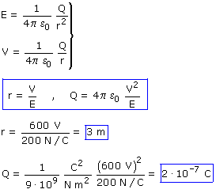

 Advertencia: En la expresión del módulo del campo la letra Q representa la carga sin signo pero en la expresión del potencial la letra Q representa la carga con signo. Resumiendo la misma letra representa cosas dis-tintas. Como en este problema la carga era positiva no han surgido problemas pero si hubiera sido negativa... Prueba a resolver este mismo problema cuando el potencial vale -600 V |